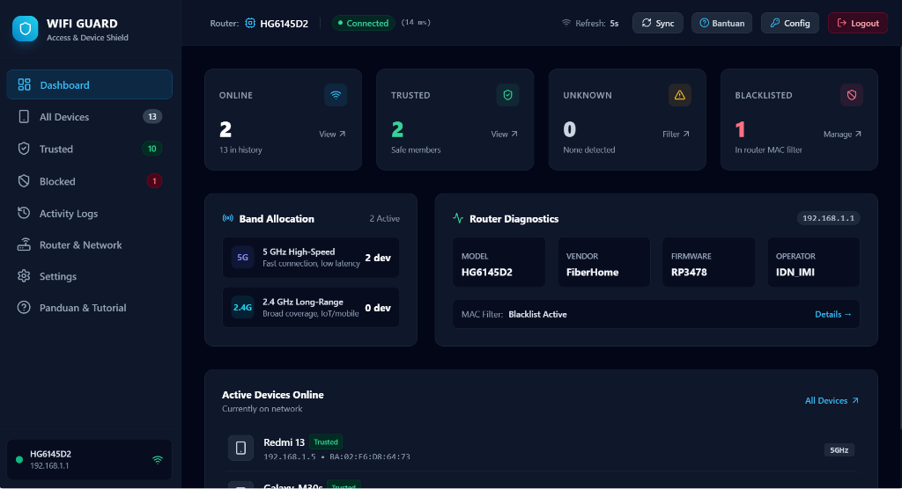
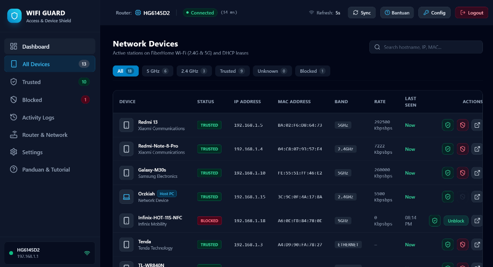
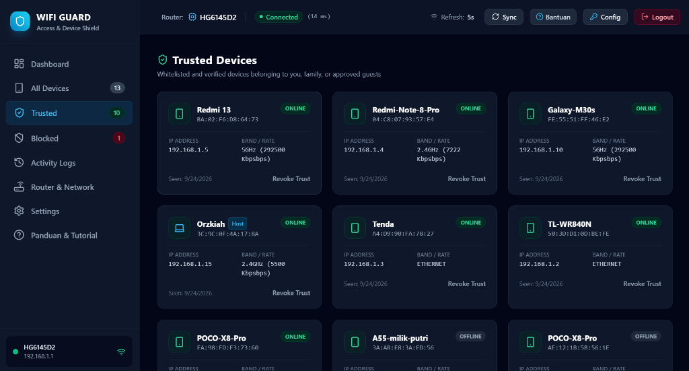
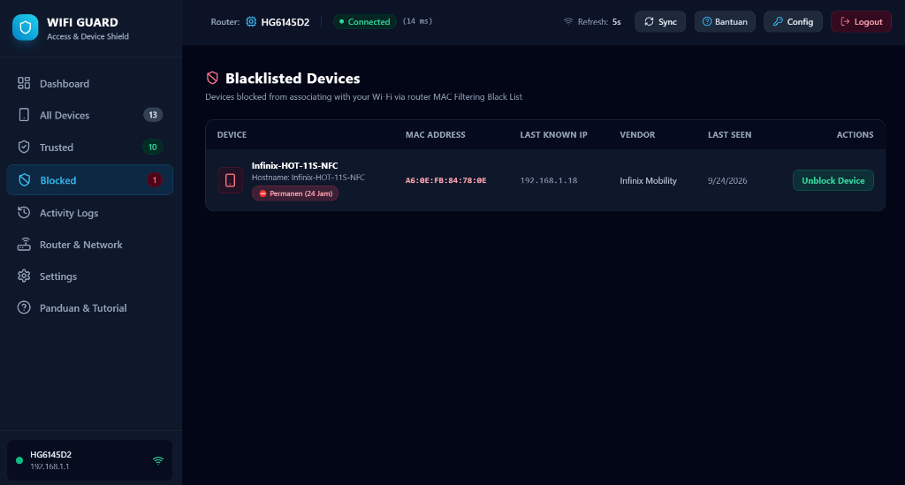
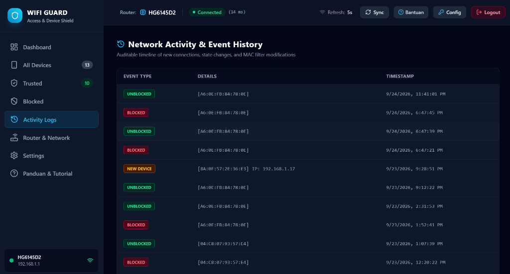

Pantau seluruh perangkat yang tersambung secara instan, kenali perangkat asing, dan putus akses penyusup secara permanen di tingkat router. Tanpa perlu akses root, tanpa langganan wajib.
Klik setiap tab di bawah atau gunakan kontrol galeri untuk melihat tangkapan layar langsung dan fungsi operasional setiap modul.





Solusi Praktis Mengelola Jaringan Wi-Fi Mandiri
Perintah blokir dieksekusi langsung ke dalam tabel filter MAC router. Sekali terblokir, internet perangkat target mati permanen 24 jam meski HP atau laptop Anda dimatikan.
Tidak memerlukan modifikasi sistem, rooting, atau tunneling VPN lokal yang menguras baterai. Aman dipasang pada semua smartphone Android standar.
Sangat cocok untuk orang tua (Parental Control). Atur waktu pemutusan internet otomatis di jam tidur atau jam belajar (misal: 21.00 s/d 06.00).
Sistem secara otomatis mengklasifikasikan perangkat baru yang belum Anda beri label sebagai "Unknown", sehingga pembobol sandi Wi-Fi mudah dikenali.
Aplikasi secara otomatis mendeteksi alamat MAC perangkat Anda sendiri dan mencegah kesalahan pemblokiran perangkat yang sedang digunakan.
Dilengkapi tombol logout instan untuk membebaskan sesi router. Anda dapat bergantian memantau jaringan dari HP maupun laptop tanpa takut sesi tersangkut.
Mengapa WiFi Guard Lebih Unggul dari Tools Tradisional
| Karakteristik | Tool Tradisional (cth: NetCut) | WiFi Guard |
|---|---|---|
| Tingkat Operasi | Client / Peer (ARP Spoofing) | Hardware Router (MAC Filtering Resmi) |
| Kebutuhan Akses Root | Wajib Root di HP Android | Tidak Butuh Root (Bebas Modifikasi) |
| Ketahanan Saat HP Mati | Blokir langsung batal saat aplikasi ditutup | Tetap terblokir permanen di memori router |
| Ketahanan di Jaringan Modern | Sering gagal karena proteksi ARP modern | Kebal, transmisi diputus langsung oleh modem |
| Status Legalitas & Antivirus | Kerap terdeteksi sebagai malware / exploit | 100% Sah & Aman Menggunakan Kredensial Sah |
Kompatibel dengan Berbagai Merk Router
3 Langkah Cepat Memulai
Pastikan smartphone atau laptop Anda tersambung ke jaringan Wi-Fi lokal router yang sama. Buka aplikasi WiFi Guard.
Masukkan alamat IP gateway (bawaan: 192.168.1.1) serta username dan kata sandi admin router Anda. Informasi kredensial disimpan terenkripsi di perangkat Anda.
Tandai perangkat keluarga sebagai "Trusted". Bila ada perangkat asing yang tidak diizinkan, putus koneksinya dengan tombol "Block" atau pasang jadwal jam otomatis.
FAQ & Solusi Masalah
Router fisik seperti FiberHome hanya membolehkan satu admin aktif dalam satu waktu. Jika Anda membuka web admin di browser laptop, HP Anda akan ditolak. Cukup tekan tombol "Logout" di bar atas aplikasi laptop/HP Anda sebelum berpindah perangkat.
Ya. Alamat IP 192.168.1.1 adalah alamat jaringan lokal (Private LAN). Bila HP menggunakan kuota data seluler, perangkat berada di luar jaringan rumah dan tidak dapat menjangkau router.
Tidak bisa. Pemblokiran bekerja pada lapisan fisik hardware (MAC Filtering) di dalam router. Router menolak komunikasi data perangkat tersebut terlepas dari kata sandi Wi-Fi yang dimasukkan.
100% aman. WiFi Guard beroperasi menggunakan antarmuka resmi bawaan router milik Anda sendiri, sama persis seperti saat Anda menyetel konfigurasi melalui browser web komputer.
Unduh paket aplikasi installer secara langsung dan pasang di smartphone Android maupun komputer Windows Anda tanpa perantara.